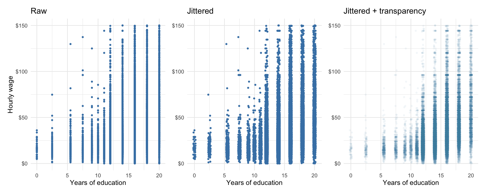
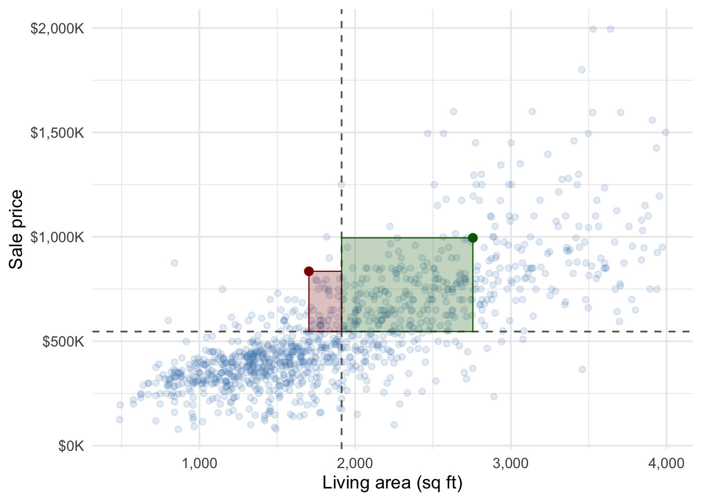
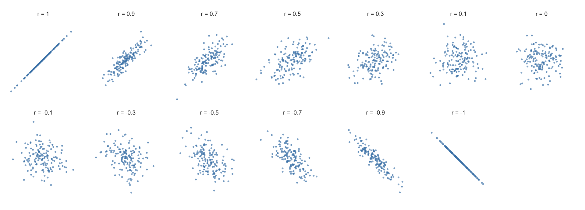
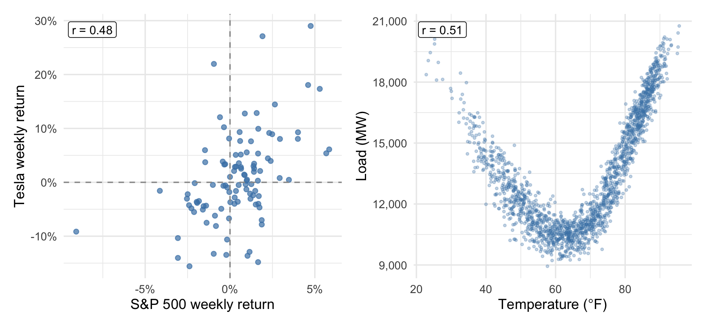
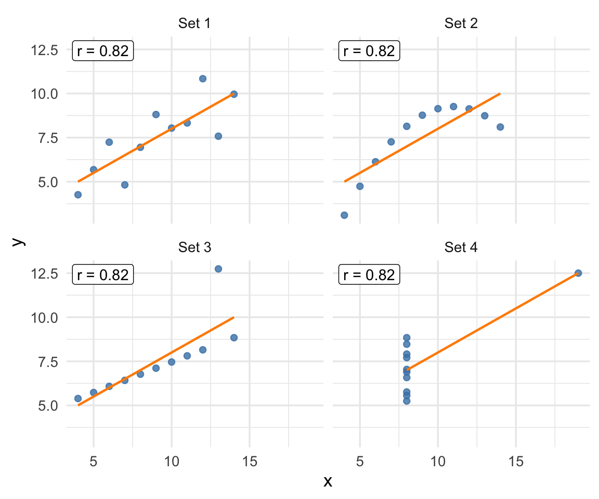
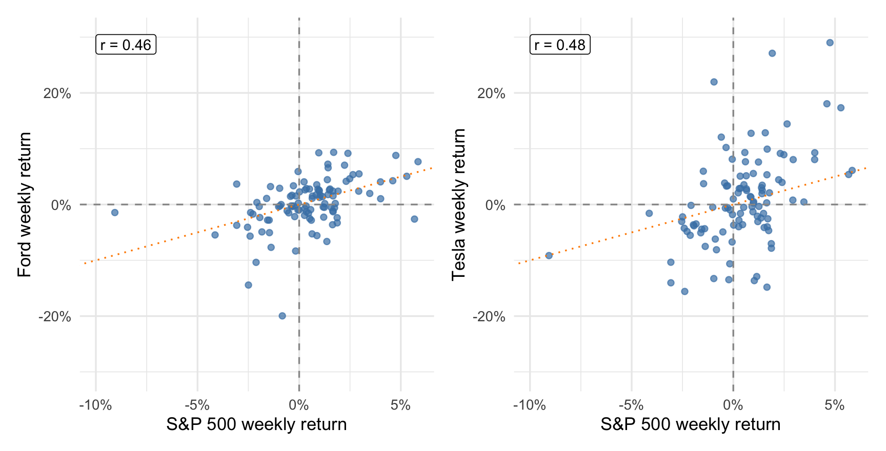
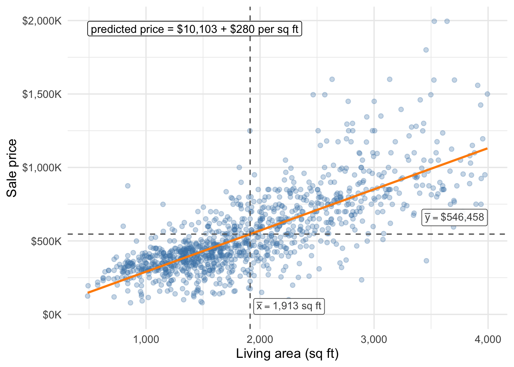
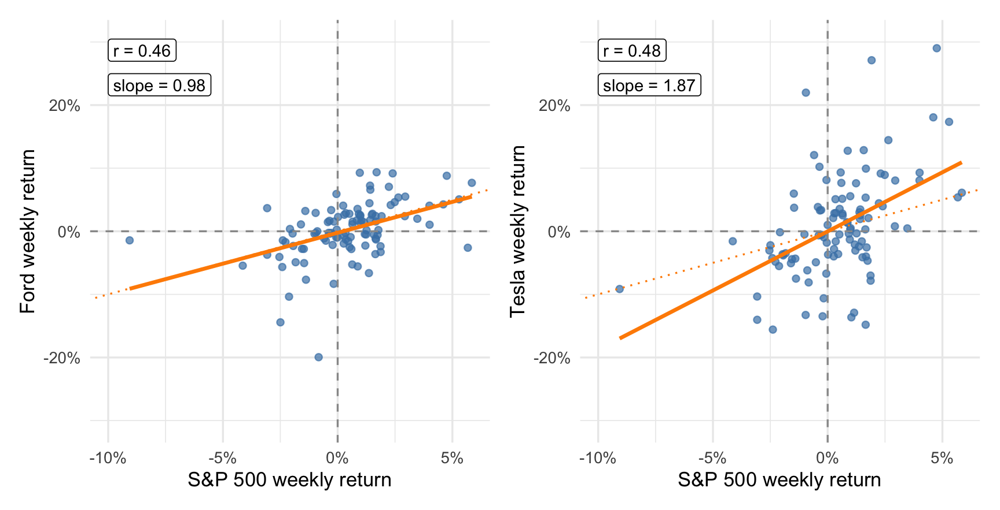
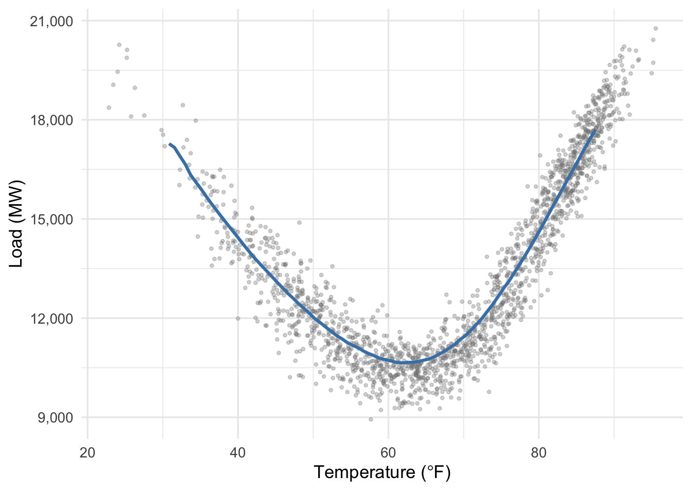
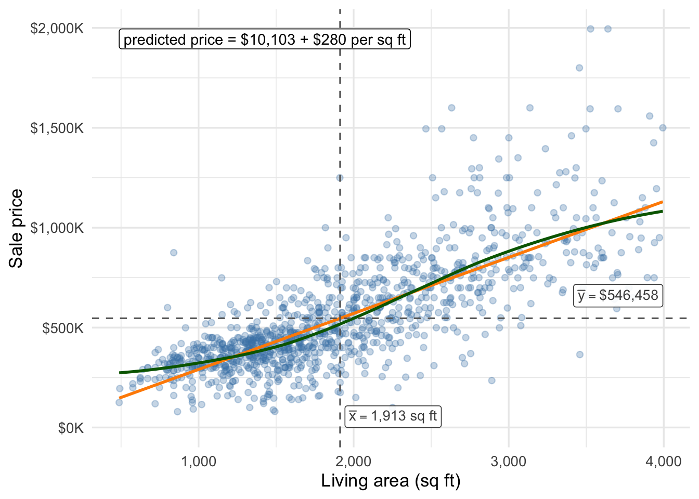

7 Two Quantitative Variables
For pairs of quantitative variables, our first step is usually to visualize them in a scatterplot, possibly adding a visual guide like a line or curve that describes how the two variables tend to move together. Relationships that are linear, or at least close to linear, invite additional numeric summaries of their data. We’ll see some of these here, and again later on when we build linear models from data like this.
7.1 Scatterplots
A scatterplot puts one variable on each axis and draws a point for every observation. Figure 7.1 plots 1,103 Austin home sales from three ZIP codes (78721, 78723, and 78731), the same homes whose ages we plotted in Figure 2.4, with living area on the x-axis and sale price on the y-axis.
A scatterplot gives us a quick visual description of how the two variables tend to move together. We see here a positive relationship — larger houses tend to sell for more — that is close to linear (well-described by a straight line, rather than a U or some other shape) and strong. We see some evidence that the variability in prices is larger for bigger houses — the range of prices for houses around 1,000 sqft is narrower than the range of prices for houses around 3,000 sqft, for example.
When the sample size is large a scatterplot can turn into an unreadable blob. Even when the sample size is small, if one or both variables have many ties it can be difficult to read the scatterplot. For example, the CPS data from Section 2.1 has both problems. The sample size is large (44,690 workers) and one of the key variables — years of education, educ_years — takes only a handful of distinct values. A naive scatterplot (Figure 7.2, left panel) piles tens of thousands of workers onto a few vertical lines. To fix the ties we can apply jitter, which adds a little random horizontal shake to the reported years of education so identical x-values spread apart (Figure 7.2, middle panel). Even then we see wider but mostly dark strips. The right panel of Figure 7.2 adds transparency (alpha), so densely-packed areas appear darker than less-dense areas. (Figure 7.1 also uses a little transparency if you look closely.) Another viable option is to treat years of education as an ordinal categorical variable when we create our plots. Either approach works; the best option depends on the purpose of the visualization and the audience.

Here we see wages that tend to increase with years of education, but following a more complicated trend (flat at low levels, increasing rapidly in the middle, and flattening out again at the top). The spread of wages seems to increase with education as well.
7.2 Covariance and correlation
The scatterplot is an excellent start, but numeric summaries are also very useful for understanding and communicating our analyses (when they don’t obscure important features of the data). We’ll start by building measures of linear relationships. Loosely, two variables have a linear relationship if we can draw a straight line through the points on a scatterplot. (We’ll make this more precise later.)
Our first measure is the covariance. For paired observations \((x_i, y_i)\) it is given by
\[ s_{xy} = \frac{1}{n-1} \sum_{i=1}^{n} (x_i - \bar{x})(y_i - \bar{y}), \]
the average product of the two variables’ deviations from their means. In words: for each observation, ask whether \(x\) and \(y\) are on the same side of their respective averages, and how far. When a bigger-than-average house also has a bigger-than-average price, both deviations are positive and the product is positive; when both are below average, two negatives again multiply to a positive. Points that are above average on one variable and below on the other contribute negative products.

The figure below gives the covariance a more nuanced geometric interpretation, detailed in the caption.

The covariance has unhelpful units, unfortunately. For the Austin data it comes to 158,246,850 “square-foot-dollars,” a number whose size depends entirely on the units we happened to measure in. This complicates matters if we want to compare the strength of the linear relationship between price and size to the strength of the relationship between wages and education, for example.
The correlation solves that problem by computing the covariance of z-scored variables:
\[ r = \frac{s_{xy}}{s_x \, s_y} \]
Dividing by \(s_x s_y\) does the same job as z-scoring both variables before taking the covariance: each deviation gets measured in standard deviations rather than raw units, so the units cancel.
The correlation is always between \(-1\) and \(+1\), and it doesn’t change if you re-measure size in square meters or price in pesos. Its magnitude has a consistent meaning across datasets. A correlation of \(+1\) means the points fall exactly on an upward-sloping line, \(-1\) exactly on a downward-sloping one, and 0 means no linear association at all.
For the Austin home sales, \(r = 0.77\) — a strong positive relationship. For wages and education, \(r = 0.42\): the same direction, much weaker, which matches the fanned-out cloud we saw.
Here are some synthetic datasets to illustrate what various levels of correlation may look like when relationships are truly linear:

7.3 Take care with correlation
Correlation is a useful measure, but like any one-number summary of a dataset it can obscure important features of the data. We need to ensure it’s an appropriate choice for any given problem.
7.3.1 Correlation only measures linear relationships
Take a look at the two scatterplots below. On the left, weekly returns on Tesla stock — from the returns data we met in Section 2.1 — are plotted against weekly returns on the S&P 500 index. On the right is a scatterplot of daily average load on the Dallas-Fort Worth-area power grid, from ERCOT, the Texas grid operator, versus that day’s average temperature. Would you say there’s a stronger relationship between Tesla and S&P 500 returns, or between load on the grid and temperature?

You almost surely picked the load-temperature relationship: load moves more predictably with temperature than Tesla does with the S&P 500. However, the two correlations are nearly identical: 0.48 for Tesla and S&P 500 and 0.51 for load and temperature.
Correlation only measures linear relationships, but the load-temperature relationship is highly nonlinear. Electricity demand is highest when it’s very hot or very cold, producing the U-shaped cloud in the right panel of Figure 7.6.
7.3.2 Correlation is sensitive to extreme observations
Like the standard deviation and variance, correlation and covariance can be sensitive to outliers and extreme observations. A single extreme point can drag the correlation down, or manufacture a large correlation out of nothing. Anscombe’s quartet, four small synthetic datasets that share the correlation \(r = 0.82\), shows both failures in its bottom two panels:

The top left panel shows a nice, tidy dataset where a linear relationship seems like a good approximation. In the top right panel is an extreme version of what we saw for the ERCOT data: correlation is misleading when the true relationship is nonlinear. In the bottom left panel, a single extreme observation obscures a perfectly linear trend among the other data points. In the bottom right panel, a single extreme observation creates the illusion of a linear trend where none exists.
7.3.3 Correlation is not the slope
Correlation measures the strength and direction of a linear relationship, but not its nature. That is, it measures how close the points are to a straight line, and whether that line slopes up or down, but not the actual value of the slope or the intercept. Two datasets can have identical correlations but exhibit rather different linear relationships between the \(x\) and \(y\) variables on their natural scale.
Let’s see a real-data example. A common problem in finance is assessing how the returns on an individual stock move with the market as a whole. Correlation is one natural measure here, as the relationships tend to be close to linear and it answers the question “how tightly do these two assets move together?” in a way that is independent of the individual volatility (standard deviation) of the stock returns or the market index.
The returns data cover 104 weeks of returns on a couple dozen individual assets alongside the S&P 500. Figure 7.8 plots Ford and Tesla returns against the market returns, as measured by the S&P 500.

Since the relationships are apparently close to linear, correlation gives us a way to measure how tightly each stock’s returns are coupled to the market, irrespective of each stock’s own volatility. In this case, the two correlations are nearly identical: 0.46 for Ford and S&P 500 and 0.48 for Tesla and S&P 500. That is, the strength of the linear relationship between each stock’s returns and the S&P 500 is essentially identical.
The correlation doesn’t tell us whether each stock’s returns tend to be more or less extreme than the market return in any given week. That is radically different between the two stocks: the dotted diagonal line is the line \(y=x\); a stock whose returns exactly tracked the market would have a scatterplot concentrated on this line. A stock whose returns were usually about the same as market returns would have a scatterplot concentrated around this line with some variability above and below. That’s essentially what we see for Ford. Tesla, by contrast, tends to have returns that are very high when the market is high, and very low when the market is low — not perfectly, not deterministically, but on average.
We will see later on that Tesla’s returns are much more volatile than Ford’s, even though market returns account for a similar share of the week-to-week variation in each stock’s returns. Correlation told us how tightly each stock tracks the market. If we want to know how big each stock’s moves tend to be for a given market move, we need to look at the line of best fit.
7.4 The line of best fit
An apparent linear relationship invites an obvious summary: draw the line. There is a standard recipe for choosing it — the line of best fit, also called the least-squares line because it makes the average squared vertical distance from the points to the line as small as possible. We’ll work with that criterion directly when we build regression models later in these notes; here we simply note some of its properties. The best-fit line for predicting \(y\) from \(x\) has slope
\[ b = r \, \frac{s_y}{s_x}. \]
In words, the slope is given by the correlation — the strength of the linear relationship — times an adjustment factor that accounts for the individual spread (and units) of the two variables. You’ll remember from algebra that a slope is “rise over run”: how much the line rises or falls for every one-unit increase in \(x\).
The line of best fit also predicts the average \(y\) value at the average \(x\) value, so it passes through the point \((\bar{x}, \bar{y})\). That pins down the intercept as
\[ a = \bar{y} - b\,\bar{x}. \]

When the relationship is close to linear, the points will appear randomly scattered above and below the line in about equal measure, and we can think about each point on the line as approximating the average sale price of all houses of that size. For example, the line predicts that a 1,700-square-foot house will sell for about $486,734. There are only so many houses of that exact size in the data — perhaps none in fact — but if we take the average sale price of houses that are close to 1,700 sqft, say between 1675 and 1725, we get $469,620 — within about 4% of the prediction, and well inside the house-to-house variation among those 29 homes.
Now let’s return to the Ford and Tesla example. Here are the data again, this time with the line of best fit overlaid and annotated:

Both fitted lines have near-zero intercepts: on average, when the market is flat (0% return), so are Ford and Tesla. The slopes are very different, however: Ford’s slope is very close to one, meaning on average we should expect its return to be about the market return. Tesla’s slope is much steeper, meaning that on average we should expect its return to be nearly twice the market return. Tesla has high market risk — it tends to exaggerate the overall market’s movements. It also has much higher overall risk (volatility) than Ford (the standard deviation of Ford’s weekly returns is 4.5%, while Tesla’s is 8.2%). If you have a background in finance, the slope of this line is (more or less) the “beta” (\(\beta\)) you already know (and “alpha” (\(\alpha\)) is — roughly — the intercept).
What’s going on? We’ll see later that correlation tells us what share of the week-to-week variation in a stock’s returns is accounted for by its linear relationship with the market. Tesla has both higher market risk (slope, \(b\), or \(\beta\)) and greater overall volatility than Ford, but that share is about the same for the two stocks.
7.5 Visualizing nonlinear trends
When the relationship between the two variables is close to linear, the line of best fit is useful both as a numeric summary and as a visual guide. We’ll see some examples of ways to construct numeric summaries of some special nonlinear relationships later, but for now we’ll introduce a visual tool that can help us see the shape of a relationship without committing to any particular formula: a smoother. Here’s an example using the ERCOT data:

Here we see a smooth curve constructed such that it passes through the “middle” of the data — the data points are roughly evenly scattered above and below the curve. There are many ways to construct such a curve, but a simple one is to fit lines or simple polynomials to small sections of data and then stitch them together. The mathematics aren’t important here — the animation below shows the process of constructing the smooth curve above:

It can be useful to overlay a smooth curve on a scatterplot even when the relationship is close to linear, because it can reveal subtle nonlinearities that the line of best fit misses. But we must be careful, particularly in small samples, to avoid over-reading apparent “wiggles” in the smooth curve. Here’s the housing data again, with a smooth fit alongside the line of best fit:

The smoother more or less traces the line of best fit, with deviations at either end where the data are a little sparser. These small deviations aren’t necessarily evidence against a truly linear relationship; we’ll cover diagnostics for nonlinearities later in these notes. For now: 1) the smooth curve can help your reader see the nature of the relationship between the two variables without making any particularly strong assumptions about what the relationship is, and 2) the smooth curve will generally not be a straight line, even for truly linear relationships — it’s best thought of as a visual aid.